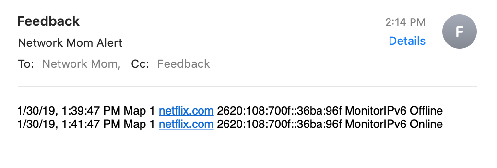

When email alerts are generated
Network Mom Availability wants to alert support personnel as soon as possible when outages happen. But paging support personnel too frequently can cause alarms to be ignored and drive network engineers insane. Network Mom Availability strives to strike a balance.
When a monitor transitions from status Green to status Red, an alert notification is queued. This requires 3 failed pings over a 90-second interval.
When a monitor transitions from status Red to status Green, a (good) alert notification is queued. This requires 3 successful pings over a 90-second interval.
Every 5 minutes, all alert notifications for each email destination are bundled into one email and sent. This may mean that an outage does not result in an alert email for 2-7 minutes.
Email alerts are not generated for transitioning from the Blue state. This means new devices can be added to monitoring without fear of paging network engineers. But it also means that alerts may not be generated after a power outage which reboots your monitoring host.

https://networkmom.net feedback@networkmom.net Copyright 2019 Network Mom LLC